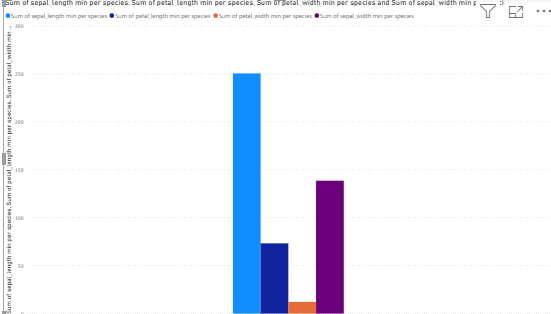
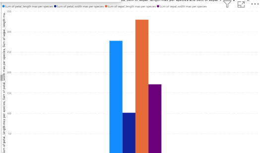
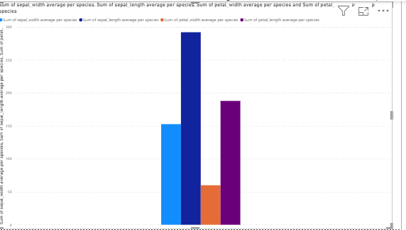
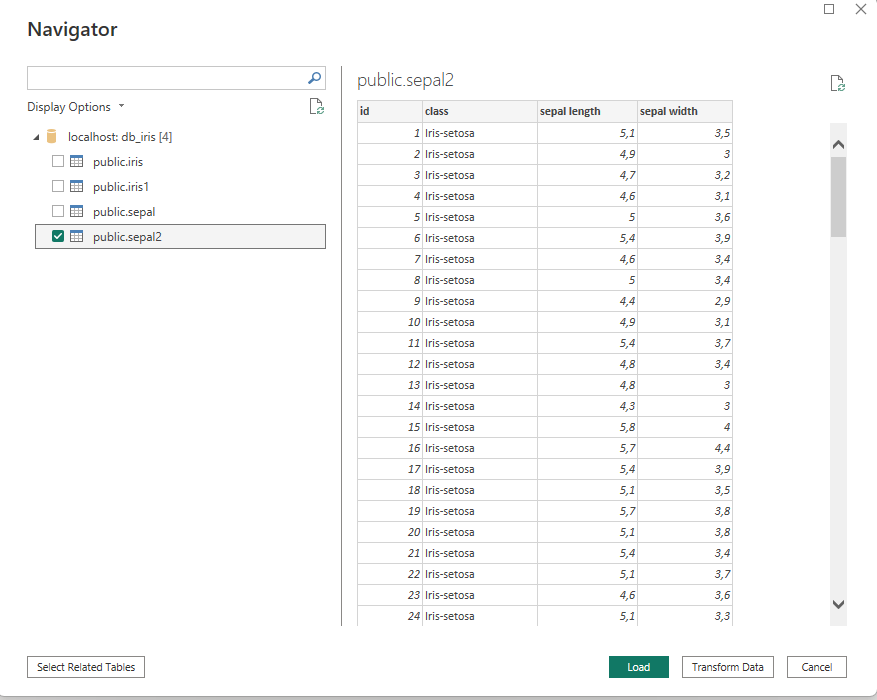
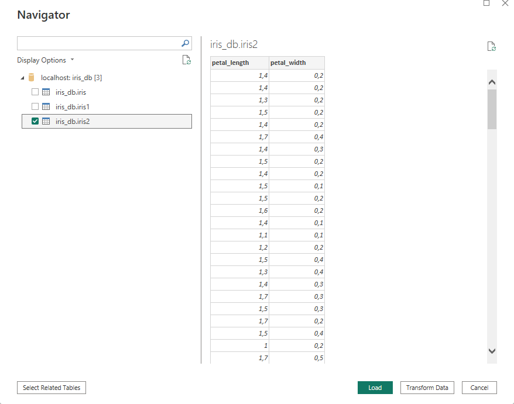
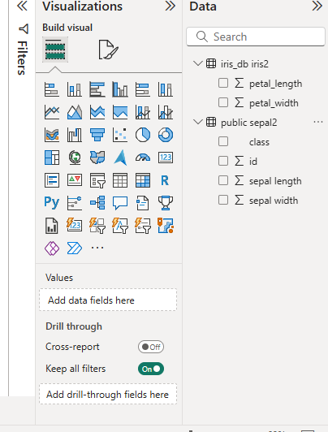
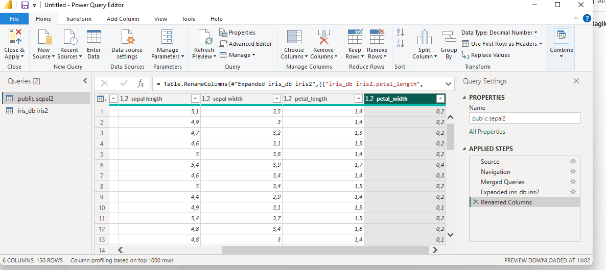
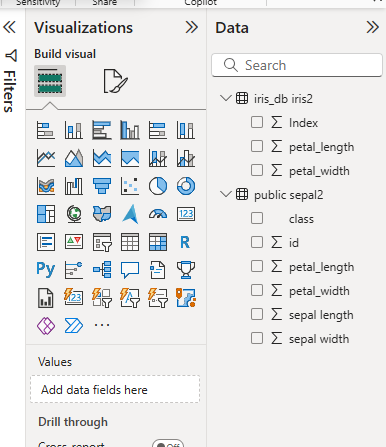
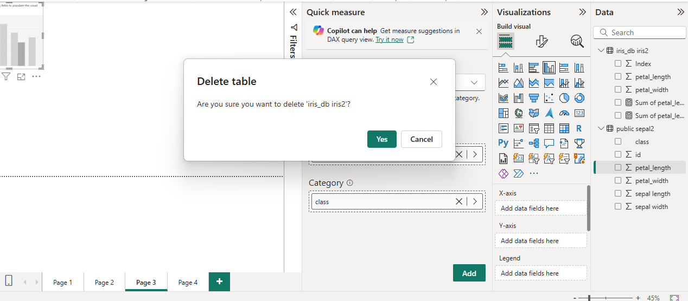
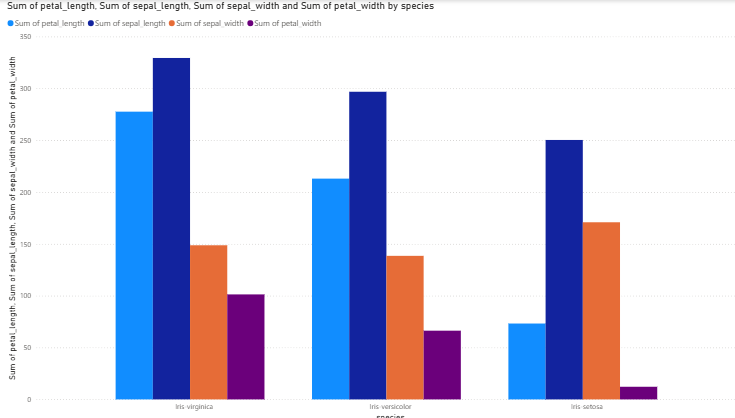

EKSPLORASI DATA#
Sebelum melakukan analisis lebih lanjut, langkah awal yang AKAN dilakukan adalah eksplorasi data pada dataset iris. Dataset ini berisi informasi tentang karakteristik bunga iris yang jumlahnya ada sebanyak 150 data dan terdiri dari empat atribut utama, yaitu sepal length, sepal width, petal length, dan petal width, serta satu atribut kelas yaitu species yang menunjukkan jenis bunga (Iris-setosa, Iris-versicolor, dan Iris-virginica).
import pandas as pd
df = pd.read_csv("IRIS.csv")
pd.set_option("display.max_rows", None)
pd.set_option("display.max_columns", None)
pd.set_option("display.width", None)
pd.set_option("display.max_colwidth", None)
print(df)
---------------------------------------------------------------------------
ModuleNotFoundError Traceback (most recent call last)
Cell In[1], line 1
----> 1 import pandas as pd
3 df = pd.read_csv("IRIS.csv")
5 pd.set_option("display.max_rows", None)
ModuleNotFoundError: No module named 'pandas'
Dalam tahap eksplorasi data ada beberapa hal penting yang harus dipehatikan, yaitu sebagai berikut:
1. Nilai minimum dan maksimum dari setiap kolom#
Pada tahap awal eksplorasi ini saya akan menunjukkan nilai minimun dan maksimum dari keempat kolom pada dataset tersebut dalam bentuk diagram batang. Tujuannya adalah untuk mengetahui rentang data atau batas bawah dan batas atas dari ukuran bunga iris. Dengan cara ini, dapat diketahui seberapa kecil dan seberapa besar ukuran tiap atribut bunga.
Grafik Minimum#

Batang biru muda (sepal length) paling tinggi, artinya panjang kelopak (sepal length) memiliki nilai minimum yang cukup besar dibanding atribut lain.
Batang ungu (sepal width) juga cukup tinggi, menunjukkan bahwa lebar kelopak (sepal width) walau minimum tetap signifikan.
Batang oranye (petal width) sangat kecil, berarti lebar petal (petal width) punya nilai minimum yang sangat rendah.
Batang biru tua (petal length) di tengah, panjang petal punya nilai minimum lebih kecil dari sepal length, tapi lebih besar dari petal width.
Grafik Maksimum#

Batang oranye (sepal length max) adalah yang paling tinggi, menunjukkan bahwa panjang sepal memiliki nilai maksimum tertinggi di antara semua atribut.
Batang biru muda (petal length max) juga tinggi, artinya panjang petal juga memiliki nilai maksimum besar, walau sedikit lebih kecil dari sepal length.
Btang ungu (sepal width max) ada di tengah, nilai maksimum sepal width tidak sebesar panjang, tapi tetap cukup signifikan.
Batang biru tua (petal width max) paling kecil, artinya lebar petal adalah atribut dengan nilai maksimum paling rendah dibanding yang lain.
2. Grafik Average#

Batang biru tua (sepal width average) paling tinggi, menunjukkan bahwa rata-rata lebar sepal lebih besar dibandingkan atribut lain.
Batang ungu (petal length average) berada di urutan kedua, artinya rata-rata panjang petal cukup signifikan, tapi masih di bawah rata-rata sepal width.
Batang biru muda (sepal length average) ada di tengah bawah, panjang sepal rata-ratanya tidak sebesar lebar sepal maupun panjang petal.
Batang oranye (petal width average) paling rendah, artinya rata-rata lebar petal adalah atribut terkecil di dataset.
3. Transform Data#
Setelah menentukan nilai minimal, maksimum, average menggunakan script python dan juga menggunakan power bi yang berasal dari satu sumber saja. Sekarang saya akan melakukan transform data yaitu menggabungkan kolom-kolom pada dataset iris seperti ini. Bedanya, dataset nya ada di dua sumber database yang berbeda, dengan kolom yang dipisah menjadi 2, yaitu sepal dan petal.
Dataset IRIS.csv ini sudah saya pecah menjadi 2 data dan akan saya letakkan di 2 database yang berbeda. Berikut saya jelaskan Rinciannya:
Data Sepal Pada Database Postgres (PgAdmin)#
Data sepal yang terdiri dari Sepal Length, Sepal Width, Class (species), dan ada tambahan id untuk mempermudah penggabungan ini saya masukkan ke database Postgrees dengan nama iris_db dan nama tabel nya adalah sepal. Jumlah data masih sama, yaitu 150 data
import pandas as pd
df = pd.read_csv("sepal.csv")
pd.set_option("display.max_rows", None)
pd.set_option("display.max_columns", None)
pd.set_option("display.width", None)
pd.set_option("display.max_colwidth", None)
print(df)
id Class sepal length sepal width
0 1 Iris-setosa 5.1 3.5
1 2 Iris-setosa 4.9 3.0
2 3 Iris-setosa 4.7 3.2
3 4 Iris-setosa 4.6 3.1
4 5 Iris-setosa 5.0 3.6
5 6 Iris-setosa 5.4 3.9
6 7 Iris-setosa 4.6 3.4
7 8 Iris-setosa 5.0 3.4
8 9 Iris-setosa 4.4 2.9
9 10 Iris-setosa 4.9 3.1
10 11 Iris-setosa 5.4 3.7
11 12 Iris-setosa 4.8 3.4
12 13 Iris-setosa 4.8 3.0
13 14 Iris-setosa 4.3 3.0
14 15 Iris-setosa 5.8 4.0
15 16 Iris-setosa 5.7 4.4
16 17 Iris-setosa 5.4 3.9
17 18 Iris-setosa 5.1 3.5
18 19 Iris-setosa 5.7 3.8
19 20 Iris-setosa 5.1 3.8
20 21 Iris-setosa 5.4 3.4
21 22 Iris-setosa 5.1 3.7
22 23 Iris-setosa 4.6 3.6
23 24 Iris-setosa 5.1 3.3
24 25 Iris-setosa 4.8 3.4
25 26 Iris-setosa 5.0 3.0
26 27 Iris-setosa 5.0 3.4
27 28 Iris-setosa 5.2 3.5
28 29 Iris-setosa 5.2 3.4
29 30 Iris-setosa 4.7 3.2
30 31 Iris-setosa 4.8 3.1
31 32 Iris-setosa 5.4 3.4
32 33 Iris-setosa 5.2 4.1
33 34 Iris-setosa 5.5 4.2
34 35 Iris-setosa 4.9 3.1
35 36 Iris-setosa 5.0 3.2
36 37 Iris-setosa 5.5 3.5
37 38 Iris-setosa 4.9 3.1
38 39 Iris-setosa 4.4 3.0
39 40 Iris-setosa 5.1 3.4
40 41 Iris-setosa 5.0 3.5
41 42 Iris-setosa 4.5 2.3
42 43 Iris-setosa 4.4 3.2
43 44 Iris-setosa 5.0 3.5
44 45 Iris-setosa 5.1 3.8
45 46 Iris-setosa 4.8 3.0
46 47 Iris-setosa 5.1 3.8
47 48 Iris-setosa 4.6 3.2
48 49 Iris-setosa 5.3 3.7
49 50 Iris-setosa 5.0 3.3
50 51 Iris-versicolor 7.0 3.2
51 52 Iris-versicolor 6.4 3.2
52 53 Iris-versicolor 6.9 3.1
53 54 Iris-versicolor 5.5 2.3
54 55 Iris-versicolor 6.5 2.8
55 56 Iris-versicolor 5.7 2.8
56 57 Iris-versicolor 6.3 3.3
57 58 Iris-versicolor 4.9 2.4
58 59 Iris-versicolor 6.6 2.9
59 60 Iris-versicolor 5.2 2.7
60 61 Iris-versicolor 5.0 2.0
61 62 Iris-versicolor 5.9 3.0
62 63 Iris-versicolor 6.0 2.2
63 64 Iris-versicolor 6.1 2.9
64 65 Iris-versicolor 5.6 2.9
65 66 Iris-versicolor 6.7 3.1
66 67 Iris-versicolor 5.6 3.0
67 68 Iris-versicolor 5.8 2.7
68 69 Iris-versicolor 6.2 2.2
69 70 Iris-versicolor 5.6 2.5
70 71 Iris-versicolor 5.9 3.2
71 72 Iris-versicolor 6.1 2.8
72 73 Iris-versicolor 6.3 2.5
73 74 Iris-versicolor 6.1 2.8
74 75 Iris-versicolor 6.4 2.9
75 76 Iris-versicolor 6.6 3.0
76 77 Iris-versicolor 6.8 2.8
77 78 Iris-versicolor 6.7 3.0
78 79 Iris-versicolor 6.0 2.9
79 80 Iris-versicolor 5.7 2.6
80 81 Iris-versicolor 5.5 2.4
81 82 Iris-versicolor 5.5 2.4
82 83 Iris-versicolor 5.8 2.7
83 84 Iris-versicolor 6.0 2.7
84 85 Iris-versicolor 5.4 3.0
85 86 Iris-versicolor 6.0 3.4
86 87 Iris-versicolor 6.7 3.1
87 88 Iris-versicolor 6.3 2.3
88 89 Iris-versicolor 5.6 3.0
89 90 Iris-versicolor 5.5 2.5
90 91 Iris-versicolor 5.5 2.6
91 92 Iris-versicolor 6.1 3.0
92 93 Iris-versicolor 5.8 2.6
93 94 Iris-versicolor 5.0 2.3
94 95 Iris-versicolor 5.6 2.7
95 96 Iris-versicolor 5.7 3.0
96 97 Iris-versicolor 5.7 2.9
97 98 Iris-versicolor 6.2 2.9
98 99 Iris-versicolor 5.1 2.5
99 100 Iris-versicolor 5.7 2.8
100 101 Iris-virginica 6.3 3.3
101 102 Iris-virginica 5.8 2.7
102 103 Iris-virginica 7.1 3.0
103 104 Iris-virginica 6.3 2.9
104 105 Iris-virginica 6.5 3.0
105 106 Iris-virginica 7.6 3.0
106 107 Iris-virginica 4.9 2.5
107 108 Iris-virginica 7.3 2.9
108 109 Iris-virginica 6.7 2.5
109 110 Iris-virginica 7.2 3.6
110 111 Iris-virginica 6.5 3.2
111 112 Iris-virginica 6.4 2.7
112 113 Iris-virginica 6.8 3.0
113 114 Iris-virginica 5.7 2.5
114 115 Iris-virginica 5.8 2.8
115 116 Iris-virginica 6.4 3.2
116 117 Iris-virginica 6.5 3.0
117 118 Iris-virginica 7.7 3.8
118 119 Iris-virginica 7.7 2.6
119 120 Iris-virginica 6.0 2.2
120 121 Iris-virginica 6.9 3.2
121 122 Iris-virginica 5.6 2.8
122 123 Iris-virginica 7.7 2.8
123 124 Iris-virginica 6.3 2.7
124 125 Iris-virginica 6.7 3.3
125 126 Iris-virginica 7.2 3.2
126 127 Iris-virginica 6.2 2.8
127 128 Iris-virginica 6.1 3.0
128 129 Iris-virginica 6.4 2.8
129 130 Iris-virginica 7.2 3.0
130 131 Iris-virginica 7.4 2.8
131 132 Iris-virginica 7.9 3.8
132 133 Iris-virginica 6.4 2.8
133 134 Iris-virginica 6.3 2.8
134 135 Iris-virginica 6.1 2.6
135 136 Iris-virginica 7.7 3.0
136 137 Iris-virginica 6.3 3.4
137 138 Iris-virginica 6.4 3.1
138 139 Iris-virginica 6.0 3.0
139 140 Iris-virginica 6.9 3.1
140 141 Iris-virginica 6.7 3.1
141 142 Iris-virginica 6.9 3.1
142 143 Iris-virginica 5.8 2.7
143 144 Iris-virginica 6.8 3.2
144 145 Iris-virginica 6.7 3.3
145 146 Iris-virginica 6.7 3.0
146 147 Iris-virginica 6.3 2.5
147 148 Iris-virginica 6.5 3.0
148 149 Iris-virginica 6.2 3.4
149 150 Iris-virginica 5.9 3.0
Data Petal Pada Database MySQL Workbench#
Data petal yang ada dalam database workbench ini hanya terdiri dari dua kolom, yaitu petal length dan petal width saja. Nantinya saat proses transform maka data ini akan ditambahkan kolom yang menjadi kunci penggabungan. Data ini disimpan ke dalam database db_iris dengan nama tabel iris2. Jumlah data juga sama dengan sepal, yaitu 150 data.
import pandas as pd
df = pd.read_csv("petal.csv")
pd.set_option("display.max_rows", None)
pd.set_option("display.max_columns", None)
pd.set_option("display.width", None)
pd.set_option("display.max_colwidth", None)
print(df)
id Class petal length petal width
0 1 Iris-setosa 1.4 0.2
1 2 Iris-setosa 1.4 0.2
2 3 Iris-setosa 1.3 0.2
3 4 Iris-setosa 1.5 0.2
4 5 Iris-setosa 1.4 0.2
5 6 Iris-setosa 1.7 0.4
6 7 Iris-setosa 1.4 0.3
7 8 Iris-setosa 1.5 0.2
8 9 Iris-setosa 1.4 0.2
9 10 Iris-setosa 1.5 0.1
10 11 Iris-setosa 1.5 0.2
11 12 Iris-setosa 1.6 0.2
12 13 Iris-setosa 1.4 0.1
13 14 Iris-setosa 1.1 0.1
14 15 Iris-setosa 1.2 0.2
15 16 Iris-setosa 1.5 0.4
16 17 Iris-setosa 1.3 0.4
17 18 Iris-setosa 1.4 0.3
18 19 Iris-setosa 1.7 0.3
19 20 Iris-setosa 1.5 0.3
20 21 Iris-setosa 1.7 0.2
21 22 Iris-setosa 1.5 0.4
22 23 Iris-setosa 1.0 0.2
23 24 Iris-setosa 1.7 0.5
24 25 Iris-setosa 1.9 0.2
25 26 Iris-setosa 1.6 0.2
26 27 Iris-setosa 1.6 0.4
27 28 Iris-setosa 1.5 0.2
28 29 Iris-setosa 1.4 0.2
29 30 Iris-setosa 1.6 0.2
30 31 Iris-setosa 1.6 0.2
31 32 Iris-setosa 1.5 0.4
32 33 Iris-setosa 1.5 0.1
33 34 Iris-setosa 1.4 0.2
34 35 Iris-setosa 1.5 0.1
35 36 Iris-setosa 1.2 0.2
36 37 Iris-setosa 1.3 0.2
37 38 Iris-setosa 1.5 0.1
38 39 Iris-setosa 1.3 0.2
39 40 Iris-setosa 1.5 0.2
40 41 Iris-setosa 1.3 0.3
41 42 Iris-setosa 1.3 0.3
42 43 Iris-setosa 1.3 0.2
43 44 Iris-setosa 1.6 0.6
44 45 Iris-setosa 1.9 0.4
45 46 Iris-setosa 1.4 0.3
46 47 Iris-setosa 1.6 0.2
47 48 Iris-setosa 1.4 0.2
48 49 Iris-setosa 1.5 0.2
49 50 Iris-setosa 1.4 0.2
50 51 Iris-versicolor 4.7 1.4
51 52 Iris-versicolor 4.5 1.5
52 53 Iris-versicolor 4.9 1.5
53 54 Iris-versicolor 4.0 1.3
54 55 Iris-versicolor 4.6 1.5
55 56 Iris-versicolor 4.5 1.3
56 57 Iris-versicolor 4.7 1.6
57 58 Iris-versicolor 3.3 1.0
58 59 Iris-versicolor 4.6 1.3
59 60 Iris-versicolor 3.9 1.4
60 61 Iris-versicolor 3.5 1.0
61 62 Iris-versicolor 4.2 1.5
62 63 Iris-versicolor 4.0 1.0
63 64 Iris-versicolor 4.7 1.4
64 65 Iris-versicolor 3.6 1.3
65 66 Iris-versicolor 4.4 1.4
66 67 Iris-versicolor 4.5 1.5
67 68 Iris-versicolor 4.1 1.0
68 69 Iris-versicolor 4.5 1.5
69 70 Iris-versicolor 3.9 1.1
70 71 Iris-versicolor 4.8 1.8
71 72 Iris-versicolor 4.0 1.3
72 73 Iris-versicolor 4.9 1.5
73 74 Iris-versicolor 4.7 1.2
74 75 Iris-versicolor 4.3 1.3
75 76 Iris-versicolor 4.4 1.4
76 77 Iris-versicolor 4.8 1.4
77 78 Iris-versicolor 5.0 1.7
78 79 Iris-versicolor 4.5 1.5
79 80 Iris-versicolor 3.5 1.0
80 81 Iris-versicolor 3.8 1.1
81 82 Iris-versicolor 3.7 1.0
82 83 Iris-versicolor 3.9 1.2
83 84 Iris-versicolor 5.1 1.6
84 85 Iris-versicolor 4.5 1.5
85 86 Iris-versicolor 4.5 1.6
86 87 Iris-versicolor 4.7 1.5
87 88 Iris-versicolor 4.4 1.3
88 89 Iris-versicolor 4.1 1.3
89 90 Iris-versicolor 4.0 1.3
90 91 Iris-versicolor 4.4 1.2
91 92 Iris-versicolor 4.6 1.4
92 93 Iris-versicolor 4.0 1.2
93 94 Iris-versicolor 3.3 1.0
94 95 Iris-versicolor 4.2 1.3
95 96 Iris-versicolor 4.2 1.2
96 97 Iris-versicolor 4.2 1.3
97 98 Iris-versicolor 4.3 1.3
98 99 Iris-versicolor 3.0 1.1
99 100 Iris-versicolor 4.1 1.3
100 101 Iris-virginica 6.0 2.5
101 102 Iris-virginica 5.1 1.9
102 103 Iris-virginica 5.9 2.1
103 104 Iris-virginica 5.6 1.8
104 105 Iris-virginica 5.8 2.2
105 106 Iris-virginica 6.6 2.1
106 107 Iris-virginica 4.5 1.7
107 108 Iris-virginica 6.3 1.8
108 109 Iris-virginica 5.8 1.8
109 110 Iris-virginica 6.1 2.5
110 111 Iris-virginica 5.1 2.0
111 112 Iris-virginica 5.3 1.9
112 113 Iris-virginica 5.5 2.1
113 114 Iris-virginica 5.0 2.0
114 115 Iris-virginica 5.1 2.4
115 116 Iris-virginica 5.3 2.3
116 117 Iris-virginica 5.5 1.8
117 118 Iris-virginica 6.7 2.2
118 119 Iris-virginica 6.9 2.3
119 120 Iris-virginica 5.0 1.5
120 121 Iris-virginica 5.7 2.3
121 122 Iris-virginica 4.9 2.0
122 123 Iris-virginica 6.7 2.0
123 124 Iris-virginica 4.9 1.8
124 125 Iris-virginica 5.7 2.1
125 126 Iris-virginica 6.0 1.8
126 127 Iris-virginica 4.8 1.8
127 128 Iris-virginica 4.9 1.8
128 129 Iris-virginica 5.6 2.1
129 130 Iris-virginica 5.8 1.6
130 131 Iris-virginica 6.1 1.9
131 132 Iris-virginica 6.4 2.0
132 133 Iris-virginica 5.6 2.2
133 134 Iris-virginica 5.1 1.5
134 135 Iris-virginica 5.6 1.4
135 136 Iris-virginica 6.1 2.3
136 137 Iris-virginica 5.6 2.4
137 138 Iris-virginica 5.5 1.8
138 139 Iris-virginica 4.8 1.8
139 140 Iris-virginica 5.4 2.1
140 141 Iris-virginica 5.6 2.4
141 142 Iris-virginica 5.1 2.3
142 143 Iris-virginica 5.1 1.9
143 144 Iris-virginica 5.9 2.3
144 145 Iris-virginica 5.7 2.5
145 146 Iris-virginica 5.2 2.3
146 147 Iris-virginica 5.0 1.9
147 148 Iris-virginica 5.2 2.0
148 149 Iris-virginica 5.4 2.3
149 150 Iris-virginica 5.1 1.8
Proses Transform Manual#
Pada proses ini, 2 data yang terpisah dan berasal dari sumber database yang berbeda akan digabungkan menjadi data yang utuh. Berikut ini langkah-langkah nya:
Masuk ke power bi, dan masukkan data dari dua sumber untuk dibaca oleh power bi, seperti cara diawal. Tampilan data ini telah saya hapus bagian id dan class pada tabel iris2 yang berisi data petal. Sebenarnya tanpa dihapus juga bisa, tapi untuk mempermudah pembacaan maka saya hapus saja, sehingga menyisakan 2 kolom.
Data sepal dari PgAdmin yang dimasukkan ke power bi

Data petal dari workbench yang dimasukkan ke dalam power bi

Hasil data yang telah dimasukkan ke power bi

Kemudian, di bagian home pilih menu Transform Data

Pada bagian inilah proses Transform data akan dilakukan
Setelah memastikan kedua data muncul, maka yang harus dilakukan adalah membuat kunci untuk dapat menggabungkan keduanya, dapat berupa id atau class (species)nya. Dalam kasus saya, karena id dan class di data petal sudah dihapus di database, maka saya harus menambahkan kolom id di data petal. Caranya dengan memilih menu ‘add column’ lalu pilih start indeks nya. karena di sepal dimulai dari 1 maka tambahan kolom juga dimulai dari satu. Barulah data dapat di gabungkan.
Lalu, pilih opsi Merge Query yang ada di menu paling kanan. Disana nanti akan muncul data sepal sebagai data pertama yang akan digabungkan. Kemudian pilih data kedua yang akan digabungkan, yaitu data petal. Jangan lupa klik kolom id di data sepal dan kolom indeks di data petal. Lalu, pilih digabungkan ke dalam (merge inner only). Baru klik ok, setelah itu kita boleh langsung klik tanda x untuk keluar nanti akan ada pilihan untuk apply. Maka proses transform bisa selesai.
Cek bagian awal tampilan power bi, di sidebar data akan muncul data sepal yang sudah lengkap dengan data petal yang telah digabung tadi. Jangan khawatir jika data petal yang lama masih ada disana. Kalian bisa menghapus manual, karena power bi tidak secara otomatis menghapus data lama nya.


Terakhir, saya tampilkan semua data hasil penggabungan yang sudah dikelompokkan ke dalam 3 class yang ada

Proses Transform dengan Script Python#
Script Python ini bisa kalian masukkan ke menu script python yang ada di power bi juga. Isinya mulai dari password, nama database dan port dapat disesuaikan dengan database yang kalian gunakan. Karena disini saya menggunakan PgAdmin dan MySQL Workbench jadi ketentuan nya terlihat pada script di bawal ini
import pandas as pd
import pymysql
import psycopg2
mysql_conn = pymysql.connect(
host="localhost",
user="root",
password="sk25",
database="db_iris",
port=3306
)
petal = pd.read_sql("SELECT * FROM petal", mysql_conn)
pg_conn = psycopg2.connect(
host="localhost",
user="postgres",
password="sk25_",
database="iris_db",
port=5432
)
sepal = pd.read_sql("SELECT * FROM sepal", pg_conn)
iris = pd.concat([petal, sepal], axis=1)
dataset = iris
Selain menggunakan script python di power bi, kita juga dapat menggunakan script python biasa yang diaplikasikan ke collab notebook, jupyter notebook dan sebagainya. Contohnya seperti di bawah ini:
import pandas as pd
sepal = pd.read_csv("sepal.csv")
petal = pd.read_csv("petal.csv")
iris = pd.concat([sepal.reset_index(drop=True),
petal.reset_index(drop=True)], axis=1)
print(iris.head())
id Class sepal length sepal width id Class petal length \
0 1 Iris-setosa 5.1 3.5 1 Iris-setosa 1.4
1 2 Iris-setosa 4.9 3.0 2 Iris-setosa 1.4
2 3 Iris-setosa 4.7 3.2 3 Iris-setosa 1.3
3 4 Iris-setosa 4.6 3.1 4 Iris-setosa 1.5
4 5 Iris-setosa 5.0 3.6 5 Iris-setosa 1.4
petal width
0 0.2
1 0.2
2 0.2
3 0.2
4 0.2
Agar dataset terlihat utuh seperti sebelumnya, maka kita perlu menghapus kolom id dan class yang ada di petal.csv tadi menggunakan script di bawah ini:
iris = iris.loc[:, ~iris.columns.duplicated(keep='first')]
print(iris.head())
sepal length sepal width petal length petal width
0 5.1 3.5 1.4 0.2
1 4.9 3.0 1.4 0.2
2 4.7 3.2 1.3 0.2
3 4.6 3.1 1.5 0.2
4 5.0 3.6 1.4 0.2